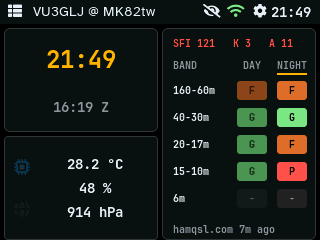

The screens, as shown on the device.
QRPickle turns an ESP32 "Cheap Yellow Display" (CYD) into a field-friendly ham radio dashboard: DX cluster, POTA and SOTA activators, HamAlert, APRS, band conditions, satellite passes with ISS SSTV events, weather and a clock, on a 2.8" touchscreen. Everything is set up from a web console on the device, and updates arrive over WiFi.
Features
- DX Cluster: live spots from DX cluster servers, filtered by band and mode.
- POTA and SOTA: activators on air, filtered by band, mode and QRP.
- HamAlert: spots matching your own triggers.
- APRS: stations heard (list and radar), messages and your position beacon, over APRS-IS.
- Band conditions: 11 bands rated for day and night at your location, greyline and sunrise/sunset, from HAMQSL.com solar data.
- Satellites: the next passes of popular amateur satellites over your station, ISS SSTV events and school contacts, with an LED reminder.
- Weather and clock: local and UTC time, an optional indoor sensor, OpenWeather conditions and forecast.
- Made for the field: screen cycling, 7 themes including red and E-Ink styles, automatic brightness, a status LED.
- Easy to run: a web console for every setting, profiles for home and field, updates over WiFi.
- Private and open: passes and band ratings are worked out on the device, your location stays there; MIT-licensed, source on GitHub.
Read about the project in the QRPickle article on Getting On The Air.